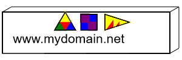

We must have specificity and productivity. This is a factory. Signs, markers, maps, action card deck, map of The Street, The Watershed, and The Factory, which starts by just creating itself, but is how all factories are made. This is not just the map factory it is the factory map.
Perhaps this needs to be absolutely minimal, and a full documentation of the Map Factory software and the various physical media that go with it. That is all. The product is not so much maps, which are easy and too specific, or full map systems, which belong in Cosmology because that's how deep maps are, but rather mappers: people who can teach other to make maps. Or Map Teachers. Or perhaps we are just the Map Factory. The purpose of the book "Map Factory" is for the reader to become the map factory.
A map is a combination of geometric and topological information in a human readable form.
A factory is a network of things connected by actions which produce a useful product.
Memes are maps. Powerpoint slides are maps. maps are maps. Circuit diagrams are maps.
We build maps from multiple media, and link them together both conceptually and physically.
Maps fall into several main categories:
The World is the literal space we physically inhabit, on which we place a layer of media which changes how we perceive that world.
What might a map be?
Maps are language. Maps are also meta language, a system for creating languages.
Map Factory, as defined here, is a specific way of building maps and factories. We aim to create a framework which allows the maximum number of people to build the maximum number of possible maps, for maximum freedom. That is, the maps shown here might not be the map someone wants, but we hope that it points the way to creating the map anyone wants. We work from a world view that puts us
We study both the map factory and the factory map.
physical link factories
All of these things are links: the point to something, direct ones attention to a thing which one can choose to take action towards or not.
A marker stone is a painted stone with symbolic value, which indicates a location that has significance. We place marker stones at map nodes, the points which link between different paths in a network. Examples are where streams of water come together, which is often what defines a city or town, or intersections of major or minor streets, which are also often the site of a town. This can connect to a url, link to information in an online document, simply mark an important place, or act as a guide to find a small location in a large area where objects or information can be found. Quartz and paint pens are the materials, or acrylic paint and brushes. Markers can also be ceramic tiles or bricks or sticks of various kinds.
Action cards are cards that link to the information required to carry out an action. One side is more graphical and one side is more links: urls, contact information of people, summary of overall action. Cards are cut out as about 3.5X5 inches in size, with corners rounded using a US dime to get the radius, cut from some kind of thick cardstock, thin cardboard, or similar media. In theory any kind of pen or marker can be the only needed art tool, along with scissors and ruler and a dime. Coloring can also be colored pencils or crayons.
Signs are used to mark a node in the Map Factory or Geometron network, to bring in "customers" when operating in a public area where we need to draw attention in. Signs should be as simple and artistic as possible, using the major symbols of whatever the relevant factory is. Factories in the physical world should typically have a sign.
As the size and power of the network grows, we will build real industrial infrastructure to take shelter in, shelter machines and materials, and transport materials around. Shelter, boats, material transport, machine fixtures, and any other major structural element which is not built into an existing thing of some kind will be of Skeletron. Skeletron has its own self replicating factory data structure, but for this purpose we will just call it sticks lashed or tied together with rope or string.
The raspberry pi server also needs its own factory data structure which is self contained, and connected to this factory but not part of it exactly. Suffice it to say that this is a self-contained localized web server that serves the Map Factory software using php combined with Apache on the Raspberry Pi, so basically the LAMP stack minus the "M". This can also be a free hosting account, both of these get links from the Map Factory, and have their own replicators built into them. A replicator is a data structure built into a thing which is a factory for that thing.
Terminal. A terminal can be an existing public terminal, a cheap laptop permanently left out in a place, or in its most primitive form a burner Android phone with a OTG USB cable and a wired USB keyboard, along with an ArtBox and rubber band chain thing.
Books as documented in Action Geometry can be part of factories, for detailed information on replication, which can in turn replicate.
Laminated maps can be hand drawn or printed from computers, laminated with clear tape and cut out, again just like the methods learned in Action Geometry. This is the same thing. Maps can also just be drawn. They really are just maps.
digital media factories
Language, Factory, Watershed, Street, Hyphae,